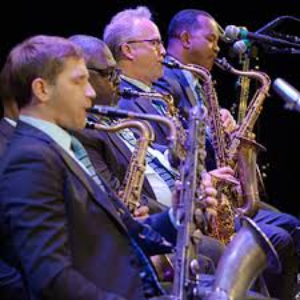
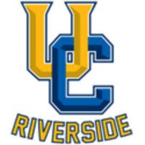

Leslie Estrella
My name is Leslie S. Estrella. I am an Economic Administration major at the University of California - Riverside. I am a part of the University Honors Program where I am learning about civic engagement, the pursuit of knowledge, and creativity. A component of the program is researching problems present in the community and suggesting solutions to said problems. I am also a part of the ASUCR Elections Committee and I am in charge of the polling stations, election results, and incentives. A major component of this position is ensuring that things run smoothly during election week, which includes managing technical and logistical problems, as well as any conflict that may come up. Previous positions I have held include being a teacher’s assistant at church, where I was in charge of managing the arts and craft materials used during class, setting up the room before class began, and cleaning up afterwards. I was also a section leader in my high school band and I was in charge of leading practices, following up on students that needed help, and handling conflict within the section. I also volunteered during big events and I was in charge of organizing sheet music, ensuring that bands transitioned easily between performances, and optimizing time management and efficiency.
Outside of my academic and professional life, my personal interests include reading fiction and nonfiction. I grew up reading mystery novels such as Nancy Drew and the Gallagher Girl series. When I got older I began to read about former presidents, biology, and psychology. I also sew, crochet, paint, cook, and bake. I enjoy using my hands and creating physical objects. My favorite recreational activities include swimming, hiking, and yoga. I live 20 minutes away from a mountain and I often go on hikes on the weekend. My background includes growing up in Southern California where racial diversity is ever present. As a result, I have come into contact with people that speak different languages and come from different cultural backgrounds than I do. As a result, one of my personal goals is to learn more than 3 languages, so that I can travel and communicate with the local people. I already speak English and Spanish and I am currently learning French and Portuguese. I also hope to learn Japanese and German soon.
My curiosity and love for other cultures has encouraged me to look at the world differently. I try to see things from different perspectives and incorporate the different things I learn into my everyday life. I also enjoy turning an idea I have into a tangible reality, which is a common thread I have found in my hobbies. They all include turning an idea into a reality. Those two aspects of my personality incorporate well into my professional life. I try to learn from my co-workers and use their experiences as a whetstone to sharpen my own knowledge. As a result, I am open to new ideas and enjoy brainstorming with others. When I finally think of an idea, I try to take incremental steps to help me make turn that idea into a reality.
Experience
Section Leader
• lead practice sessions during school
• organized events
• resolved conflicts between students
Committee Member
• coordinated polling stations
• resolved technical problems
• organized schedules
Teaching Assistant
• facilitated Sunday school classes
• managed art and craft supplies
• resolved conflict between children
Education
UC Riverside
Portfolio



